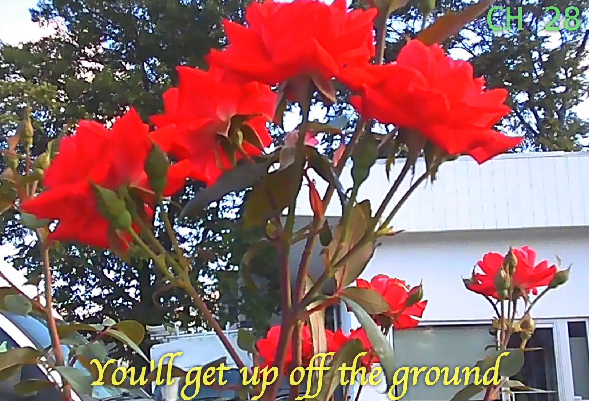

The solar panel has always had the power to store the sun.
It was I who abandoned it in the dark, denying it the sun.
Now, I bring it back into the light and roam around the city, capturing the beauty of life using the sun’s energy.
It’s always been me who determines what my ☀︎ panel is for.
**
Last summer, on May 26, 2024, I worked late into the night and fell asleep with the light still on. Around 3 am, half asleep, I woke to the sound of the light flickering off. Oh, another electrical problem, I thought. I wanted to go back to sleep, but in case something was wrong with the wiring, I rolled over and got out of bed.
And then—
in my small room,
against the blue of the night,
stood a sturdy man over six feet tall.
It was a surreal moment. We gazed at each other for a while. Luckily, he chose to back away and climbed out through the kitchen window. I called 911, making sure my roommates were safe. The police and detectives came to investigate, but in the end, the intruder was never caught.
My roommates and I decided to install a security camera outside my window in case he returned. To provide a reliable power source for the outdoor camera, I also bought a solar panel. But there was no suitable place to install it, so I never ended up using it. Since the solar panel reminded me of that unpleasant memory, I pushed it into the corner of my room and never touched it again.


So, for an entire year,
my solar panel never had the chance to return to the light and store the sun.

**
A year later, in the summer of 2025, I had the opportunity to join a workshop called TWA (Total Work of Art) at Ultralight School in New York. The night before the workshop began, I received an email from the organizers—Stephen, Bryant, and Laurel—asking us to bring a physical object as the starting point for our work.
I checked the time. It was almost midnight when I opened the email. Since I lived in Boston, I had to catch a bus to New York that departed at 1:30 am. I rummaged through my room, hoping to find something to bring, and came across a small cardboard box beneath the storage cabinet.
Inside was my forgotten solar panel.

Unlike the summer before, the solar panel I found that night gave me a new perspective. Freed from the unpleasant memories, the solar panel itself seemed surprisingly romantic. It stores the sun’s energy—the most powerful and brightest source of light in the universe—and turns it into movement.
Having been kept in the dark for a year, my solar panel held no energy at all. So, for the first time, I decided to let it soak up the sun.
Carrying it in my hands, I left home to catch the late-night bus to New York.


The bus rattled through the night and arrived in New York a little ahead of schedule.
Around 5:30 am, the sun began to rise.
I strapped the solar panel to my bag and wandered through the city, letting it collect the first light of the day until the workshop began that afternoon.


**
That first solar energy was used to power my uncharged radio, so I could share music sent by the morning sunlight with my workshop community.
For the next workshop, I connected a mini camera to the solar panel and began photographing my journeys between Boston and New York.

**
Sunlight TV
I archived the photos on my Are.na channel. and to make the photo album more enjoyable, I created Sunlight TV. The TV is connected to my Are.na channel, so whenever I add new photos, they are automatically reflected on the TV screen.
Using my phone as a remote, I flipped through the TV channels and ended up making a music video from the photos.
The song I chose for the music video was Another Day of Sun from La La Land, which is basically about how, even if someone lets you down, the morning rolls around.

**
Burn my DVD
Since Sunlight TV plays the photos in the exact order of my Are.na blocks, simply rearranging the photos allowed me to create new versions of the music video. I made multiple versions, and to store them, I developed Burn My DVD, where I can export each music video as a video file whenever I make a new one.

**
Ultralight TV
To sing along with these music videos, I then built a miniature karaoke machine called Ultralight TV. Like the camera and the radio before it, it is powered by my solar panel, so I could sing along with the music videos under the summer sunlight while charging it.